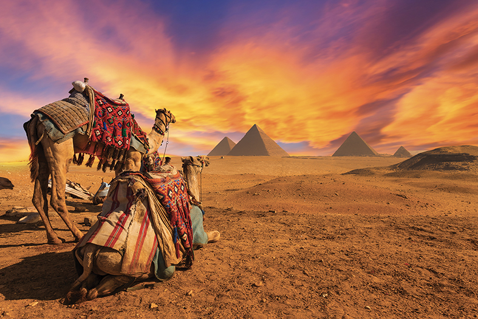

Visitare in una volta sola tutti i luoghi magici dell’Egitto è praticamente impossibile se non si ha a disposizione davvero tanto tempo, ma è di certo possibile esplorare le principali meraviglie attraverso un tour dell’Antico Egitto e crociera sul Nilo, che comprende alcune delle cose da vedere assolutamente: Il Cairo: luogo d’atterraggio di tutti i voli internazionali, sede del Museo Egizio – che ospita la più grande collezione di antichità egizie del mondo, il tesoro della Tomba di Tutankhamon e la sala dedicata ai meravigliosi gioielli-talismani – e delle Piramidi di Giza. Queste antiche meraviglie, costruite oltre 4.500 anni fa, includono la Grande Piramide di Cheope – la sola fra le Sette Meraviglie del Mondo Antico sopravvissuta fino ai giorni nostri – e le piramidi di Chefren e Micerino. Non lontano dalle piramidi, si trova la Sfinge, una colossale statua con il corpo di leone e il volto di un faraone, custode dell’area. Luxor: il modo migliore per godersi i siti archeologici del passato? Attraverso il Cairo e la crociera sul Nilo, durante il quale visitare il complesso templare di Karnak e Luxor. Questi templi, che furono centro culturale e religioso dell’antica Tebe (l’attuale Luxor) sono tra i monumenti più antichi e meglio conservati di tutto l’Egitto. La grande quantità di ambienti e bassorilievi ancora intatti rendono Luxor un museo a cielo aperto, tra i più grandi del mondo. Edfu e Kom Ombo: navigando il Nilo puoi raggiungere il Tempio di Edfu, il Tempio di Horus, considerato il più suggestivo tra quelli presenti sulle sponde del fiume e quindi Kom Ombo, che nella mitologia egizia rappresentava il dio delle inondazioni del Nilo e della fertilità. Assuan: città incantevole dove si trova la Grande Diga – una delle più grandi dighe del mondo che controlla il flusso del Nilo – e il Tempio di Philae, un gioiello dell’antica architettura egizia situato su un’isola nel lago Nasser, raggiungibile in barca.
